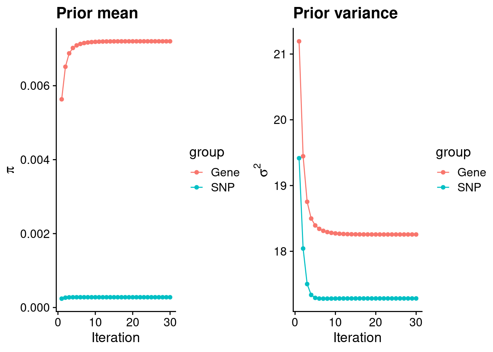
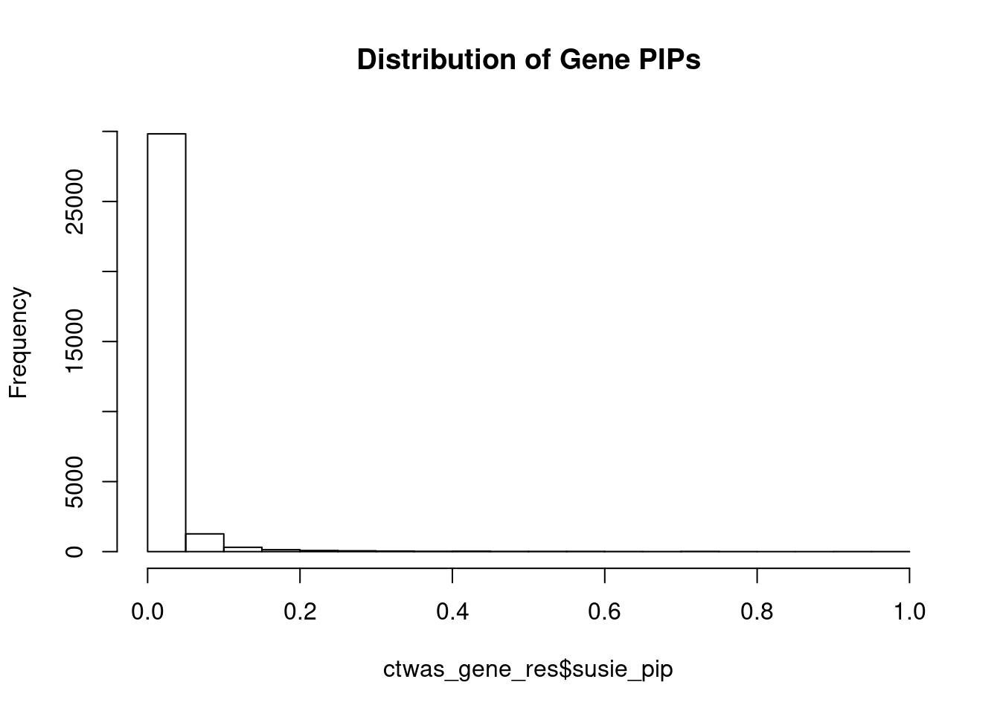
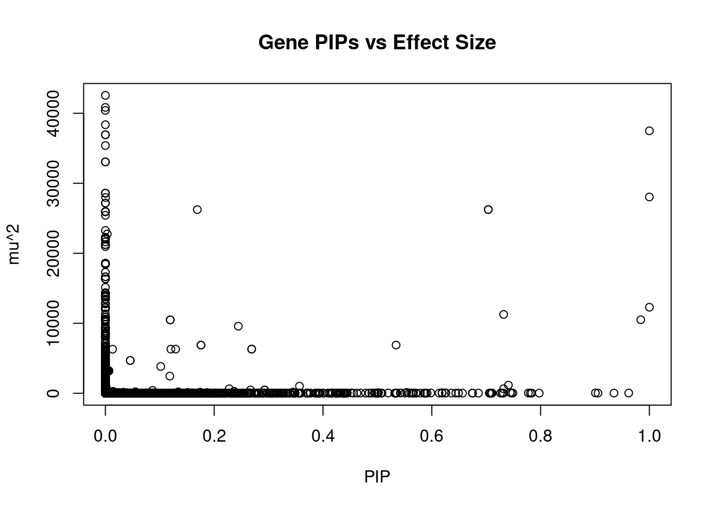
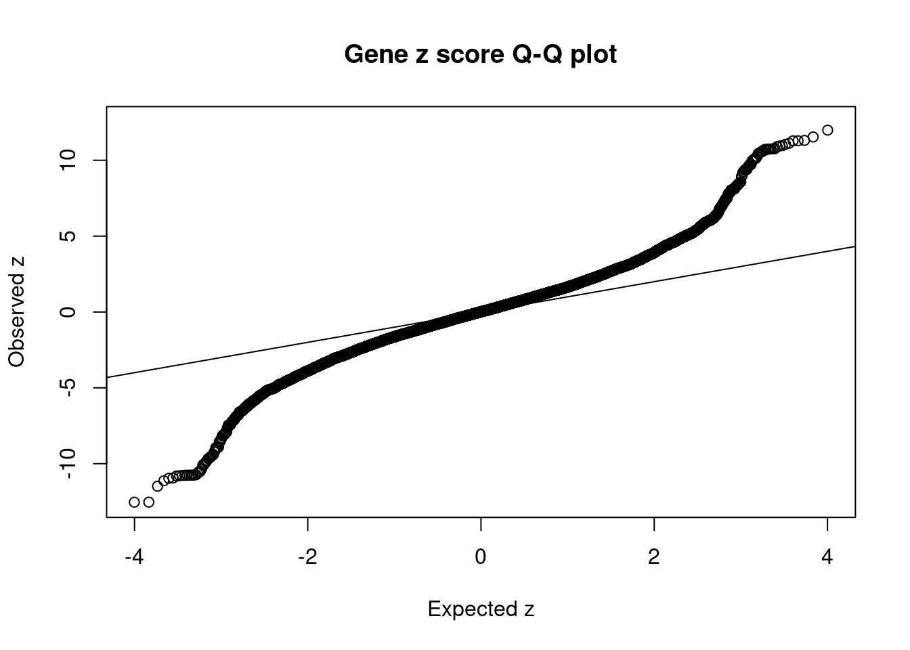
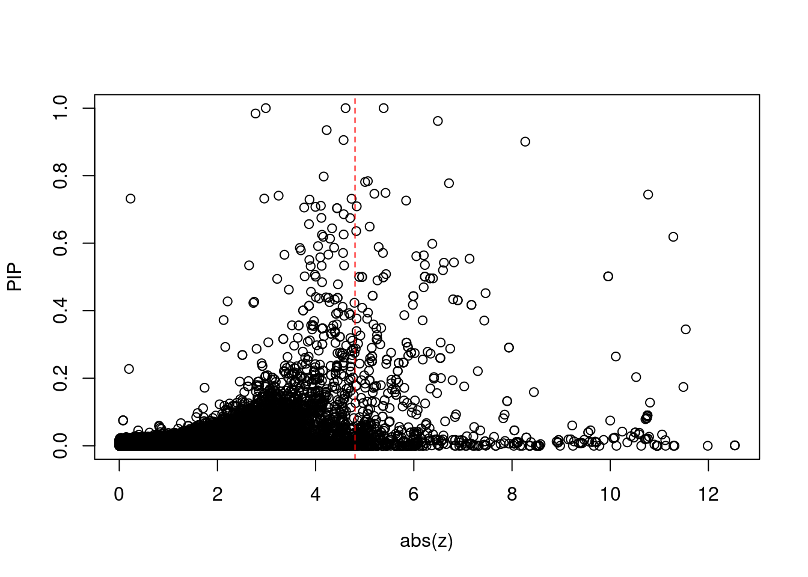
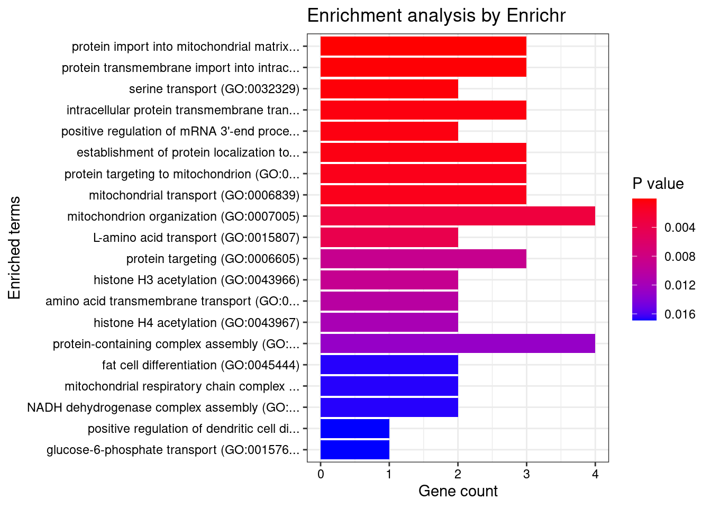
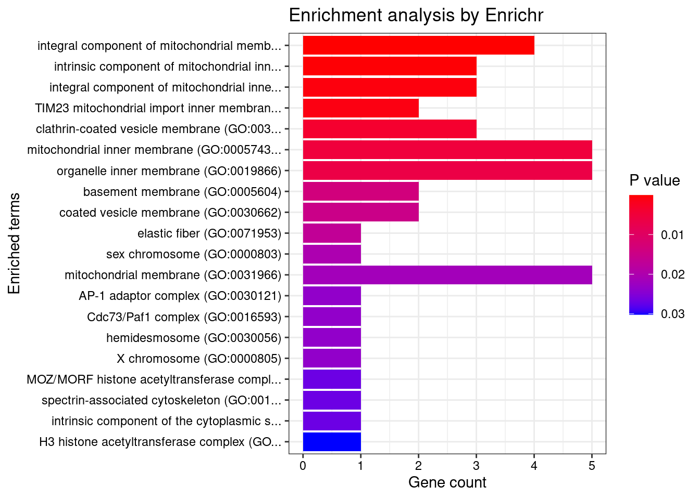
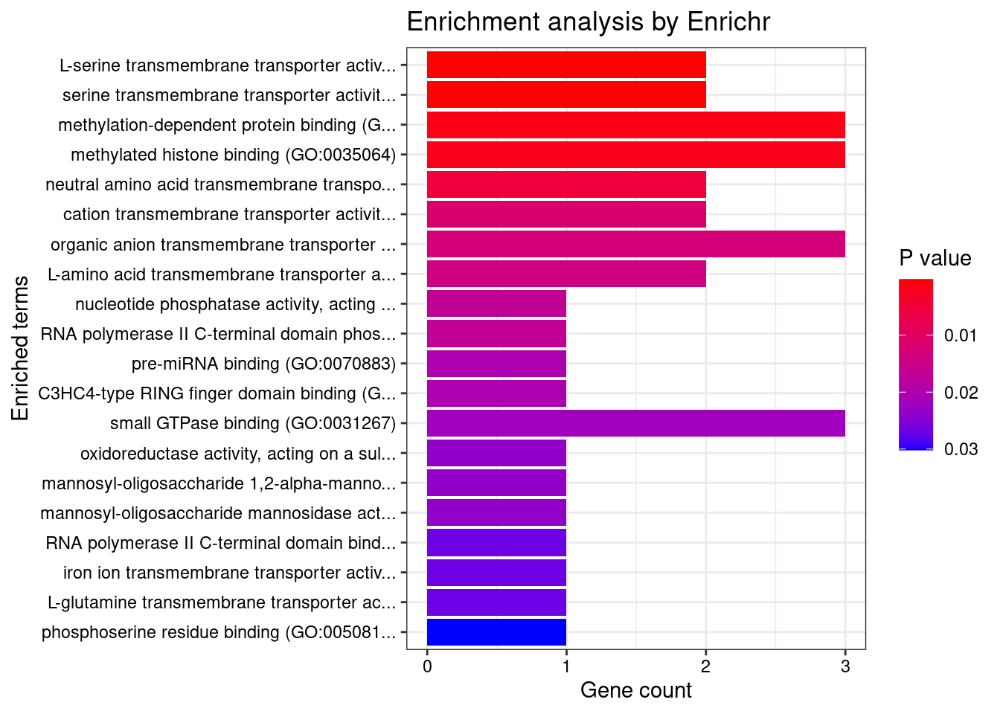
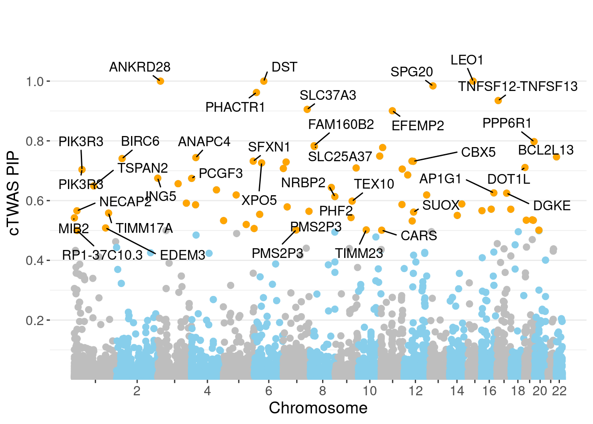
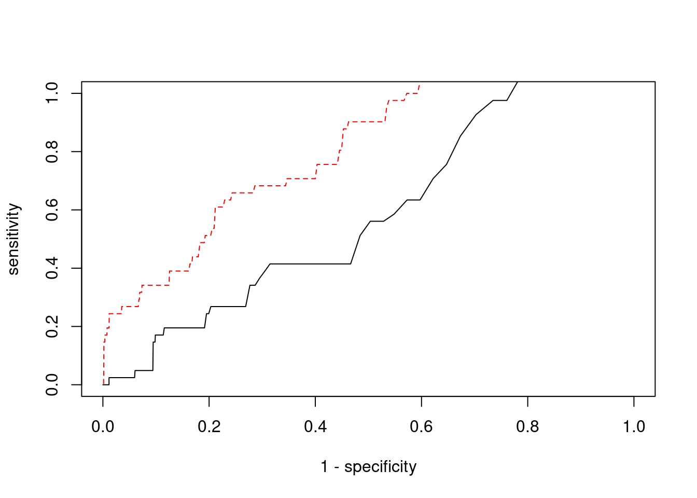

Last updated: 2022-02-22
Checks: 6 1
Knit directory: cTWAS_analysis/
This reproducible R Markdown analysis was created with workflowr (version 1.6.2). The Checks tab describes the reproducibility checks that were applied when the results were created. The Past versions tab lists the development history.
Great! Since the R Markdown file has been committed to the Git repository, you know the exact version of the code that produced these results.
Great job! The global environment was empty. Objects defined in the global environment can affect the analysis in your R Markdown file in unknown ways. For reproduciblity it’s best to always run the code in an empty environment.
The command set.seed(20211220) was run prior to running the code in the R Markdown file. Setting a seed ensures that any results that rely on randomness, e.g. subsampling or permutations, are reproducible.
Great job! Recording the operating system, R version, and package versions is critical for reproducibility.
Nice! There were no cached chunks for this analysis, so you can be confident that you successfully produced the results during this run.
Using absolute paths to the files within your workflowr project makes it difficult for you and others to run your code on a different machine. Change the absolute path(s) below to the suggested relative path(s) to make your code more reproducible.
| absolute | relative |
|---|---|
| /project2/xinhe/shengqian/cTWAS/cTWAS_analysis/data/ | data |
| /project2/xinhe/shengqian/cTWAS/cTWAS_analysis/code/ctwas_config.R | code/ctwas_config.R |
Great! You are using Git for version control. Tracking code development and connecting the code version to the results is critical for reproducibility.
The results in this page were generated with repository version 1058990. See the Past versions tab to see a history of the changes made to the R Markdown and HTML files.
Note that you need to be careful to ensure that all relevant files for the analysis have been committed to Git prior to generating the results (you can use wflow_publish or wflow_git_commit). workflowr only checks the R Markdown file, but you know if there are other scripts or data files that it depends on. Below is the status of the Git repository when the results were generated:
Ignored files:
Ignored: .ipynb_checkpoints/
Untracked files:
Untracked: Rplot.png
Untracked: analysis/.ipynb_checkpoints/
Untracked: analysis/Glucose_Adipose_Subcutaneous.Rmd
Untracked: analysis/Glucose_Adipose_Visceral_Omentum.Rmd
Untracked: analysis/Splicing_Test.Rmd
Untracked: code/.ipynb_checkpoints/
Untracked: code/AF_out/
Untracked: code/BMI_S_out/
Untracked: code/BMI_out/
Untracked: code/Glucose_out/
Untracked: code/LDL_S_out/
Untracked: code/T2D_out/
Untracked: code/ctwas_config.R
Untracked: code/mapping.R
Untracked: code/out/
Untracked: code/run_AF_analysis.sbatch
Untracked: code/run_AF_analysis.sh
Untracked: code/run_AF_ctwas_rss_LDR.R
Untracked: code/run_BMI_analysis.sbatch
Untracked: code/run_BMI_analysis.sh
Untracked: code/run_BMI_analysis_S.sbatch
Untracked: code/run_BMI_analysis_S.sh
Untracked: code/run_BMI_ctwas_rss_LDR.R
Untracked: code/run_BMI_ctwas_rss_LDR_S.R
Untracked: code/run_Glucose_analysis.sbatch
Untracked: code/run_Glucose_analysis.sh
Untracked: code/run_Glucose_ctwas_rss_LDR.R
Untracked: code/run_LDL_analysis_S.sbatch
Untracked: code/run_LDL_analysis_S.sh
Untracked: code/run_LDL_ctwas_rss_LDR_S.R
Untracked: code/run_T2D_analysis.sbatch
Untracked: code/run_T2D_analysis.sh
Untracked: code/run_T2D_ctwas_rss_LDR.R
Untracked: data/.ipynb_checkpoints/
Untracked: data/AF/
Untracked: data/BMI/
Untracked: data/BMI_S/
Untracked: data/Glucose/
Untracked: data/LDL_S/
Untracked: data/T2D/
Untracked: data/TEST/
Untracked: data/UKBB/
Untracked: data/UKBB_SNPs_Info.text
Untracked: data/gene_OMIM.txt
Untracked: data/gene_pip_0.8.txt
Untracked: data/mashr_Heart_Atrial_Appendage.db
Untracked: data/mashr_sqtl/
Untracked: data/summary_known_genes_annotations.xlsx
Untracked: data/untitled.txt
Unstaged changes:
Modified: analysis/BMI_Brain_Cortex.Rmd
Modified: analysis/LDL_Liver_S.Rmd
Modified: analysis/index.Rmd
Note that any generated files, e.g. HTML, png, CSS, etc., are not included in this status report because it is ok for generated content to have uncommitted changes.
These are the previous versions of the repository in which changes were made to the R Markdown (analysis/BMI_Brain_Cerebellum_S.Rmd) and HTML (docs/BMI_Brain_Cerebellum_S.html) files. If you’ve configured a remote Git repository (see ?wflow_git_remote), click on the hyperlinks in the table below to view the files as they were in that past version.
| File | Version | Author | Date | Message |
|---|---|---|---|---|
| Rmd | 1058990 | sq-96 | 2022-02-22 | update |
#number of imputed weights
nrow(qclist_all)[1] 31854#number of imputed weights by chromosome
table(qclist_all$chr)
1 2 3 4 5 6 7 8 9 10 11 12 13 14 15 16
2966 2106 1909 1122 1289 1627 1747 1117 1313 1326 1918 1617 589 1091 1116 1582
17 18 19 20 21 22
2254 398 2296 1033 414 1024 #number of imputed weights without missing variants
sum(qclist_all$nmiss==0)[1] 28977#proportion of imputed weights without missing variants
mean(qclist_all$nmiss==0)[1] 0.9097#add z scores to results
load(paste0(results_dir, "/", analysis_id, "_expr_z_gene.Rd"))
ctwas_gene_res$z <- z_gene[ctwas_gene_res$intron_id,]$z
z_snp <- z_snp[z_snp$id %in% ctwas_snp_res$id,]
ctwas_snp_res$z <- z_snp$z[match(ctwas_snp_res$id, z_snp$id)]
#merge gene and snp results with added information
ctwas_snp_res$genename=NA
ctwas_snp_res$gene_type=NA
ctwas_snp_res$intron_id=NA
ctwas_res <- rbind(ctwas_gene_res,
ctwas_snp_res[,colnames(ctwas_gene_res)])
#get number of eQTL for geens
num_eqtl <- c()
for (i in 1:22){
load(paste0(results_dir, "/", analysis_id, "_expr_chr", i, ".exprqc.Rd"))
num_eqtl <- c(num_eqtl, unlist(lapply(wgtlist, nrow)))
}
ctwas_gene_res$num_eqtl <- num_eqtl[ctwas_gene_res$intron_id]
#store columns to report
report_cols <- colnames(ctwas_gene_res)[!(colnames(ctwas_gene_res) %in% c("type", "region_tag1", "region_tag2", "cs_index", "gene_type", "z_flag", "id", "chrom", "pos"))]
first_cols <- c("genename", "region_tag")
report_cols <- c(first_cols, report_cols[!(report_cols %in% first_cols)])
report_cols_snps <- c("id", report_cols[-1])
report_cols_snps <- report_cols_snps[!(report_cols_snps %in% "num_eqtl")]
#get number of SNPs from s1 results; adjust for thin argument
ctwas_res_s1 <- data.table::fread(paste0(results_dir, "/", analysis_id, "_ctwas.s1.susieIrss.txt"))
n_snps <- sum(ctwas_res_s1$type=="SNP")/thin
rm(ctwas_res_s1)
#estimated group prior
estimated_group_prior <- group_prior_rec[,ncol(group_prior_rec)]
names(estimated_group_prior) <- c("gene", "snp")
estimated_group_prior["snp"] <- estimated_group_prior["snp"]*thin #adjust parameter to account for thin argument
print(estimated_group_prior) gene snp
0.0072010 0.0002783 #estimated group prior variance
estimated_group_prior_var <- group_prior_var_rec[,ncol(group_prior_var_rec)]
names(estimated_group_prior_var) <- c("gene", "snp")
print(estimated_group_prior_var) gene snp
18.26 17.28 #report sample size
print(sample_size)[1] 336107#report group size
group_size <- c(nrow(ctwas_gene_res), n_snps)
print(group_size)[1] 31854 7535010#estimated group PVE
estimated_group_pve <- estimated_group_prior_var*estimated_group_prior*group_size/sample_size #check PVE calculation
names(estimated_group_pve) <- c("gene", "snp")
print(estimated_group_pve) gene snp
0.01246 0.10784 #compare sum(PIP*mu2/sample_size) with above PVE calculation
c(sum(ctwas_gene_res$PVE),sum(ctwas_snp_res$PVE))[1] 0.5037 16.7477
genename region_tag susie_pip mu2 PVE
30707 ANKRD28 3_11 1.0000 37497.55 1.116e-01
30814 DST 6_42 1.0000 12290.08 3.657e-02
31486 LEO1 15_21 0.9999 28041.27 8.342e-02
31385 SPG20 13_13 0.9841 10509.37 3.077e-02
30809 PHACTR1 6_11 0.9620 41.98 1.202e-04
31645 TNFSF12-TNFSF13 17_7 0.9349 28.18 7.839e-05
30840 SLC37A3 7_86 0.9055 24.04 6.476e-05
31207 EFEMP2 11_36 0.9007 52.47 1.406e-04
27934 PPP6R1 19_38 0.7975 23.40 5.551e-05
12641 FAM160B2 8_23 0.7838 28.91 6.743e-05
12715 SLC25A37 8_24 0.7813 25.55 5.938e-05
16323 TRIM66 11_7 0.7776 41.75 9.658e-05
30982 CTBP2 10_78 0.7490 31.62 7.046e-05
29527 BCL2L13 22_2 0.7464 28.04 6.228e-05
7162 ANAPC4 4_21 0.7441 106.81 2.365e-04
3169 BIRC6 2_20 0.7407 1159.91 2.556e-03
18013 SLC38A2 12_29 0.7321 11262.14 2.453e-02
8892 SFXN1 5_105 0.7321 645.50 1.406e-03
18125 CBX5 12_33 0.7316 25.44 5.537e-05
10951 ANKMY2 7_16 0.7292 23.06 5.003e-05
intron_id z num_eqtl
30707 intron_3_15713641_15714571 5.3854 1
30814 intron_6_56468999_56469883 2.9850 1
31486 intron_15_51954575_51958742 -4.6095 1
31385 intron_13_36312477_36313968 2.7757 1
30809 intron_6_13182686_13205815 -6.4898 2
31645 intron_17_7559702_7560049 -4.2247 1
30840 intron_7_140348767_140351273 -4.5689 1
31207 intron_11_65872018_65872244 8.2696 1
27934 intron_19_55247109_55258435 -4.1644 1
12641 intron_8_22098310_22098423 -5.0631 1
12715 intron_8_23529212_23566108 5.0076 1
16323 intron_11_8620572_8621032 6.7162 2
30982 intron_10_125039155_125160319 -5.4234 1
29527 intron_22_17655832_17683214 5.1962 2
7162 intron_4_25407253_25409698 -10.7729 2
3169 intron_2_32575366_32590806 -3.2457 1
18013 intron_12_46367340_46370512 2.9534 1
8892 intron_5_175512196_175513463 0.2299 1
18125 intron_12_54257692_54280008 -4.7317 1
10951 intron_7_16602509_16604721 3.8750 2
genename region_tag susie_pip mu2 PVE
13637 CCDC171 9_13 0.0000000 42556 0.000e+00
13639 CCDC171 9_13 0.0000000 40838 0.000e+00
13636 CCDC171 9_13 0.0000000 40403 0.000e+00
13638 CCDC171 9_13 0.0000000 38366 0.000e+00
30707 ANKRD28 3_11 0.9999999 37498 1.116e-01
30709 ANKRD28 3_11 0.0000000 36948 0.000e+00
30710 ANKRD28 3_11 0.0000000 36919 0.000e+00
26803 PIK3R2 19_14 0.0000000 35388 0.000e+00
30923 NT5C2 10_66 0.0000000 33060 0.000e+00
30920 NT5C2 10_66 0.0000000 33060 0.000e+00
30903 C10orf32-ASMT 10_66 0.0000000 28606 0.000e+00
30917 NT5C2 10_66 0.0000000 28568 0.000e+00
31486 LEO1 15_21 0.9999230 28041 8.342e-02
31484 TMOD3 15_21 0.0003981 27971 3.313e-05
30783 ANAPC10 4_94 0.0000000 27177 0.000e+00
30784 ANAPC10 4_94 0.0000000 27177 0.000e+00
30579 PIK3R3 1_29 0.7037875 26246 5.496e-02
30580 PIK3R3 1_29 0.7037875 26246 5.496e-02
30581 PIK3R3 1_29 0.1689523 26236 1.319e-02
30575 MAST2 1_29 0.0000000 25968 0.000e+00
intron_id z num_eqtl
13637 intron_9_15883191_15885514 8.979 1
13639 intron_9_15889101_15920270 -7.233 1
13636 intron_9_15874663_15920270 -8.163 1
13638 intron_9_15888088_15888983 -7.315 1
30707 intron_3_15713641_15714571 5.385 1
30709 intron_3_15714656_15720915 -5.253 1
30710 intron_3_15737233_15751750 5.255 1
26803 intron_19_18163388_18166160 -6.025 1
30923 intron_10_103181328_103193236 5.042 1
30920 intron_10_103174982_103181185 5.037 1
30903 intron_10_102870211_102872448 -4.742 1
30917 intron_10_103111805_103139406 -4.364 2
31486 intron_15_51954575_51958742 -4.610 1
31484 intron_15_51934354_51946990 4.604 1
30783 intron_4_144995603_145064572 4.514 1
30784 intron_4_144995603_145081660 -4.514 1
30579 intron_1_46046625_46055795 -4.435 1
30580 intron_1_46046625_46061929 -4.435 1
30581 intron_1_46055971_46061929 4.419 1
30575 intron_1_46010939_46021950 4.309 1 genename region_tag susie_pip mu2 PVE
30707 ANKRD28 3_11 1.0000 37497.6 0.111564
31486 LEO1 15_21 0.9999 28041.3 0.083423
30579 PIK3R3 1_29 0.7038 26245.8 0.054957
30580 PIK3R3 1_29 0.7038 26245.8 0.054957
30814 DST 6_42 1.0000 12290.1 0.036566
31385 SPG20 13_13 0.9841 10509.4 0.030771
18013 SLC38A2 12_29 0.7321 11262.1 0.024531
30581 PIK3R3 1_29 0.1690 26236.0 0.013188
26499 ZNF562 19_9 0.5344 6887.6 0.010950
7841 CCDC127 5_1 0.2443 9575.7 0.006961
7630 MFSD8 4_84 0.2688 6310.1 0.005047
7629 MFSD8 4_84 0.2688 6310.1 0.005047
31387 SPG20 13_13 0.1192 10490.6 0.003721
31386 SPG20 13_13 0.1192 10490.6 0.003721
26497 ZNF561-AS1 19_9 0.1757 6885.2 0.003599
26498 ZNF561-AS1 19_9 0.1757 6885.2 0.003599
3169 BIRC6 2_20 0.7407 1159.9 0.002556
7632 C4orf29 4_84 0.1291 6306.1 0.002422
7631 C4orf29 4_84 0.1203 6305.8 0.002257
8892 SFXN1 5_105 0.7321 645.5 0.001406
intron_id z num_eqtl
30707 intron_3_15713641_15714571 5.3854 1
31486 intron_15_51954575_51958742 -4.6095 1
30579 intron_1_46046625_46055795 -4.4353 1
30580 intron_1_46046625_46061929 -4.4353 1
30814 intron_6_56468999_56469883 2.9850 1
31385 intron_13_36312477_36313968 2.7757 1
18013 intron_12_46367340_46370512 2.9534 1
30581 intron_1_46055971_46061929 4.4189 1
26499 intron_19_9656653_9658009 -2.6445 1
7841 intron_5_216859_218093 2.9002 1
7630 intron_4_127957592_127965897 2.5077 1
7629 intron_4_127957592_127965072 -2.5077 1
31387 intron_13_36335832_36346582 2.8188 1
31386 intron_13_36335832_36346240 -2.8188 1
26497 intron_19_9632417_9633460 2.6214 1
26498 intron_19_9632417_9645074 -2.6214 1
3169 intron_2_32575366_32590806 -3.2457 1
7632 intron_4_127984423_128008920 2.5104 1
7631 intron_4_127984423_127989721 2.5099 1
8892 intron_5_175512196_175513463 0.2299 1 genename region_tag susie_pip mu2 PVE
5612 RBM6 3_35 1.240e-03 883.21 3.258e-06
5616 RBM6 3_35 1.201e-03 883.67 3.157e-06
5615 RBM6 3_35 1.201e-03 883.67 3.157e-06
31008 BDNF-AS 11_19 0.000e+00 10361.36 0.000e+00
9699 C6orf106 6_28 3.448e-01 174.17 1.787e-04
9700 C6orf106 6_28 1.741e-01 165.06 8.551e-05
5605 MST1R 3_35 1.761e-11 180.79 9.471e-15
3028 DNAJC27-AS1 2_15 4.842e-05 186.70 2.690e-08
8202 POC5 5_44 6.189e-01 92.55 1.704e-04
3026 DNAJC27-AS1 2_15 5.217e-05 182.88 2.839e-08
22656 KCTD13 16_24 1.666e-02 101.63 5.037e-06
9703 UHRF1BP1 6_28 3.333e-02 154.47 1.532e-05
5596 RNF123 3_35 1.462e-11 800.39 3.482e-14
5597 RNF123 3_35 1.462e-11 800.39 3.482e-14
5598 RNF123 3_35 1.214e-11 799.40 2.886e-14
5599 RNF123 3_35 1.214e-11 799.40 2.886e-14
9701 C6orf106 6_28 3.543e-03 139.75 1.473e-06
22631 SH2B1 16_23 1.279e-01 62.66 2.384e-05
22673 DOC2A 16_24 2.674e-02 92.65 7.370e-06
7162 ANAPC4 4_21 7.441e-01 106.81 2.365e-04
intron_id z num_eqtl
5612 intron_3_49999513_50048245 -12.54 1
5616 intron_3_50059746_50060956 12.54 1
5615 intron_3_50059746_50060801 -12.54 1
31008 intron_11_27640005_27659171 11.99 1
9699 intron_6_34654779_34688841 11.54 2
9700 intron_6_34654779_34696446 -11.49 2
5605 intron_3_49887562_49889924 11.31 2
3028 intron_2_24972232_25001415 11.29 1
8202 intron_5_75690562_75692396 11.29 1
3026 intron_2_24972232_24972626 -11.13 2
22656 intron_16_29923359_29925539 11.12 2
9703 intron_6_34836348_34855617 11.06 1
5596 intron_3_49712656_49713513 10.96 1
5597 intron_3_49712892_49713513 -10.96 1
5598 intron_3_49714174_49715492 10.95 1
5599 intron_3_49714174_49715575 -10.95 1
9701 intron_6_34688933_34696446 10.90 1
22631 intron_16_28869383_28870709 -10.81 2
22673 intron_16_30007090_30007173 -10.79 2
7162 intron_4_25407253_25409698 -10.77 2
[1] 0.02088 genename region_tag susie_pip mu2 PVE
5612 RBM6 3_35 1.240e-03 883.21 3.258e-06
5616 RBM6 3_35 1.201e-03 883.67 3.157e-06
5615 RBM6 3_35 1.201e-03 883.67 3.157e-06
31008 BDNF-AS 11_19 0.000e+00 10361.36 0.000e+00
9699 C6orf106 6_28 3.448e-01 174.17 1.787e-04
9700 C6orf106 6_28 1.741e-01 165.06 8.551e-05
5605 MST1R 3_35 1.761e-11 180.79 9.471e-15
3028 DNAJC27-AS1 2_15 4.842e-05 186.70 2.690e-08
8202 POC5 5_44 6.189e-01 92.55 1.704e-04
3026 DNAJC27-AS1 2_15 5.217e-05 182.88 2.839e-08
22656 KCTD13 16_24 1.666e-02 101.63 5.037e-06
9703 UHRF1BP1 6_28 3.333e-02 154.47 1.532e-05
5596 RNF123 3_35 1.462e-11 800.39 3.482e-14
5597 RNF123 3_35 1.462e-11 800.39 3.482e-14
5598 RNF123 3_35 1.214e-11 799.40 2.886e-14
5599 RNF123 3_35 1.214e-11 799.40 2.886e-14
9701 C6orf106 6_28 3.543e-03 139.75 1.473e-06
22631 SH2B1 16_23 1.279e-01 62.66 2.384e-05
22673 DOC2A 16_24 2.674e-02 92.65 7.370e-06
7162 ANAPC4 4_21 7.441e-01 106.81 2.365e-04
intron_id z num_eqtl
5612 intron_3_49999513_50048245 -12.54 1
5616 intron_3_50059746_50060956 12.54 1
5615 intron_3_50059746_50060801 -12.54 1
31008 intron_11_27640005_27659171 11.99 1
9699 intron_6_34654779_34688841 11.54 2
9700 intron_6_34654779_34696446 -11.49 2
5605 intron_3_49887562_49889924 11.31 2
3028 intron_2_24972232_25001415 11.29 1
8202 intron_5_75690562_75692396 11.29 1
3026 intron_2_24972232_24972626 -11.13 2
22656 intron_16_29923359_29925539 11.12 2
9703 intron_6_34836348_34855617 11.06 1
5596 intron_3_49712656_49713513 10.96 1
5597 intron_3_49712892_49713513 -10.96 1
5598 intron_3_49714174_49715492 10.95 1
5599 intron_3_49714174_49715575 -10.95 1
9701 intron_6_34688933_34696446 10.90 1
22631 intron_16_28869383_28870709 -10.81 2
22673 intron_16_30007090_30007173 -10.79 2
7162 intron_4_25407253_25409698 -10.77 2#number of genes for gene set enrichment
length(genes)[1] 71Uploading data to Enrichr... Done.
Querying GO_Biological_Process_2021... Done.
Querying GO_Cellular_Component_2021... Done.
Querying GO_Molecular_Function_2021... Done.
Parsing results... Done.
[1] "GO_Biological_Process_2021"
Term
1 protein import into mitochondrial matrix (GO:0030150)
2 protein transmembrane import into intracellular organelle (GO:0044743)
3 serine transport (GO:0032329)
Overlap Adjusted.P.value Genes
1 3/19 0.01920 TOMM40;TIMM17A;TIMM23
2 3/32 0.04321 TOMM40;TIMM17A;TIMM23
3 2/7 0.04321 SFXN1;SLC38A2
[1] "GO_Cellular_Component_2021"
Term
1 integral component of mitochondrial membrane (GO:0032592)
2 intrinsic component of mitochondrial inner membrane (GO:0031304)
3 integral component of mitochondrial inner membrane (GO:0031305)
4 TIM23 mitochondrial import inner membrane translocase complex (GO:0005744)
Overlap Adjusted.P.value Genes
1 4/66 0.006913 TOMM40;TIMM17A;TIMM23;SFXN1
2 3/39 0.014477 TIMM17A;TIMM23;SFXN1
3 3/51 0.021360 TIMM17A;TIMM23;SFXN1
4 2/14 0.023219 TIMM17A;TIMM23
[1] "GO_Molecular_Function_2021"
Term Overlap
1 L-serine transmembrane transporter activity (GO:0015194) 2/6
2 serine transmembrane transporter activity (GO:0022889) 2/8
Adjusted.P.value Genes
1 0.01967 SFXN1;SLC38A2
2 0.01967 SFXN1;SLC38A2Warning in disease_enrichment(entities = genes, vocabulary = "HGNC", database =
"CURATED"): Removing duplicates from input list. Description FDR Ratio
8 Anemia, Neonatal 0.04104 1/35
93 Sulfite oxidase deficiency 0.04104 1/35
129 Lewy Body Disease 0.04104 2/35
146 Familial encephalopathy with neuroserpin inclusion bodies 0.04104 1/35
148 ELLIPTOCYTOSIS 3 0.04104 1/35
156 SPHEROCYTOSIS, HEREDITARY, 2 0.04104 1/35
157 RETINITIS PIGMENTOSA 42 0.04104 1/35
162 Sulfocysteinuria 0.04104 1/35
166 CUTIS LAXA, AUTOSOMAL RECESSIVE, TYPE IB 0.04104 1/35
168 NEUROPATHY, HEREDITARY SENSORY AND AUTONOMIC, TYPE VI 0.04104 1/35
BgRatio
8 1/9703
93 1/9703
129 22/9703
146 1/9703
148 1/9703
156 1/9703
157 1/9703
162 1/9703
166 1/9703
168 1/9703Loading the functional categories...
Loading the ID list...
Loading the reference list...
Performing the enrichment analysis...Warning in oraEnrichment(interestGeneList, referenceGeneList, geneSet, minNum =
minNum, : No significant gene set is identified based on FDR 0.05!NULLWarning: ggrepel: 33 unlabeled data points (too many overlaps). Consider
increasing max.overlaps
#number of genes in known annotations
print(length(known_annotations))[1] 41#number of genes in known annotations with imputed expression
print(sum(known_annotations %in% ctwas_gene_res$genename))[1] 20#significance threshold for TWAS
print(sig_thresh)[1] 4.802#number of ctwas genes
length(ctwas_genes)[1] 8#number of TWAS genes
length(twas_genes)[1] 665#show novel genes (ctwas genes with not in TWAS genes)
ctwas_gene_res[ctwas_gene_res$genename %in% novel_genes,report_cols] genename region_tag susie_pip mu2 PVE
30810 DST 6_42 1.725e-04 12264.281 6.296e-06
30811 DST 6_42 0.000e+00 6635.362 0.000e+00
30812 DST 6_42 0.000e+00 6726.554 0.000e+00
30813 DST 6_42 7.097e-05 12263.018 2.589e-06
30814 DST 6_42 1.000e+00 12290.078 3.657e-02
30815 DST 6_42 0.000e+00 393.267 0.000e+00
30816 DST 6_42 0.000e+00 133.519 0.000e+00
30838 SLC37A3 7_86 2.413e-02 14.326 1.029e-06
30839 SLC37A3 7_86 8.301e-03 6.512 1.608e-07
30840 SLC37A3 7_86 9.055e-01 24.039 6.476e-05
30841 SLC37A3 7_86 8.734e-03 7.509 1.951e-07
30842 SLC37A3 7_86 9.838e-03 8.912 2.609e-07
30843 SLC37A3 7_86 8.244e-03 6.456 1.583e-07
30844 SLC37A3 7_86 1.153e-02 9.935 3.408e-07
30845 SLC37A3 7_86 1.029e-02 9.892 3.029e-07
30846 SLC37A3 7_86 1.029e-02 9.892 3.029e-07
30847 SLC37A3 7_86 1.211e-02 9.931 3.579e-07
31385 SPG20 13_13 9.841e-01 10509.371 3.077e-02
31386 SPG20 13_13 1.192e-01 10490.574 3.721e-03
31387 SPG20 13_13 1.192e-01 10490.574 3.721e-03
31486 LEO1 15_21 9.999e-01 28041.266 8.342e-02
31642 TNFSF12-TNFSF13 17_7 6.791e-03 9.367 1.893e-07
31643 TNFSF12-TNFSF13 17_7 6.791e-03 9.367 1.893e-07
31644 TNFSF12-TNFSF13 17_7 6.791e-03 9.367 1.893e-07
31645 TNFSF12-TNFSF13 17_7 9.349e-01 28.181 7.839e-05
intron_id z num_eqtl
30810 intron_6_56463156_56463565 2.9051 1
30811 intron_6_56463764_56464685 2.1176 2
30812 intron_6_56463764_56466078 -2.1324 2
30813 intron_6_56464756_56466078 2.8924 1
30814 intron_6_56468999_56469883 2.9850 1
30815 intron_6_56598006_56598476 3.7368 1
30816 intron_6_56851604_56900421 1.5511 1
30838 intron_7_140337349_140348626 0.9305 1
30839 intron_7_140345263_140345869 -1.0554 1
30840 intron_7_140348767_140351273 -4.5689 1
30841 intron_7_140351451_140352062 -1.4265 3
30842 intron_7_140351969_140352062 1.6409 3
30843 intron_7_140352181_140355668 1.0749 2
30844 intron_7_140355764_140364408 1.4247 1
30845 intron_7_140369682_140379214 1.7377 1
30846 intron_7_140369682_140380282 1.7377 1
30847 intron_7_140380390_140382438 -1.2641 1
31385 intron_13_36312477_36313968 2.7757 1
31386 intron_13_36335832_36346240 -2.8188 1
31387 intron_13_36335832_36346582 2.8188 1
31486 intron_15_51954575_51958742 -4.6095 1
31642 intron_17_7559297_7559846 1.3318 1
31643 intron_17_7559297_7559851 1.3318 1
31644 intron_17_7559702_7559846 -1.3318 1
31645 intron_17_7559702_7560049 -4.2247 1#sensitivity / recall
print(sensitivity) ctwas TWAS
0.0000 0.2683 #specificity
print(specificity) ctwas TWAS
0.9988 0.9532 #precision / PPV
print(precision) ctwas TWAS
0.00000 0.01654 
sessionInfo()R version 3.6.1 (2019-07-05)
Platform: x86_64-pc-linux-gnu (64-bit)
Running under: Scientific Linux 7.4 (Nitrogen)
Matrix products: default
BLAS/LAPACK: /software/openblas-0.2.19-el7-x86_64/lib/libopenblas_haswellp-r0.2.19.so
locale:
[1] LC_CTYPE=en_US.UTF-8 LC_NUMERIC=C
[3] LC_TIME=en_US.UTF-8 LC_COLLATE=en_US.UTF-8
[5] LC_MONETARY=en_US.UTF-8 LC_MESSAGES=en_US.UTF-8
[7] LC_PAPER=en_US.UTF-8 LC_NAME=C
[9] LC_ADDRESS=C LC_TELEPHONE=C
[11] LC_MEASUREMENT=en_US.UTF-8 LC_IDENTIFICATION=C
attached base packages:
[1] stats4 parallel stats graphics grDevices utils datasets
[8] methods base
other attached packages:
[1] readxl_1.3.1 forcats_0.5.1
[3] stringr_1.4.0 dplyr_1.0.7
[5] purrr_0.3.4 readr_2.1.1
[7] tidyr_1.1.4 tidyverse_1.3.1
[9] tibble_3.1.6 WebGestaltR_0.4.4
[11] disgenet2r_0.99.2 enrichR_3.0
[13] cowplot_1.0.0 ggplot2_3.3.5
[15] EnsDb.Hsapiens.v79_2.99.0 ensembldb_2.8.0
[17] AnnotationFilter_1.8.0 GenomicFeatures_1.36.3
[19] AnnotationDbi_1.46.0 Biobase_2.44.0
[21] GenomicRanges_1.36.1 GenomeInfoDb_1.20.0
[23] IRanges_2.18.1 S4Vectors_0.22.1
[25] BiocGenerics_0.30.0 workflowr_1.6.2
loaded via a namespace (and not attached):
[1] ggbeeswarm_0.6.0 colorspace_2.0-2
[3] rjson_0.2.20 ellipsis_0.3.2
[5] rprojroot_2.0.2 XVector_0.24.0
[7] fs_1.5.2 rstudioapi_0.13
[9] farver_2.1.0 ggrepel_0.9.1
[11] bit64_4.0.5 lubridate_1.8.0
[13] fansi_0.5.0 xml2_1.3.3
[15] codetools_0.2-16 doParallel_1.0.16
[17] cachem_1.0.6 knitr_1.36
[19] jsonlite_1.7.2 apcluster_1.4.8
[21] Cairo_1.5-12.2 Rsamtools_2.0.0
[23] broom_0.7.10 dbplyr_2.1.1
[25] compiler_3.6.1 httr_1.4.2
[27] backports_1.4.1 assertthat_0.2.1
[29] Matrix_1.2-18 fastmap_1.1.0
[31] lazyeval_0.2.2 cli_3.1.0
[33] later_0.8.0 htmltools_0.5.2
[35] prettyunits_1.1.1 tools_3.6.1
[37] igraph_1.2.10 gtable_0.3.0
[39] glue_1.5.1 GenomeInfoDbData_1.2.1
[41] reshape2_1.4.4 doRNG_1.8.2
[43] Rcpp_1.0.7 cellranger_1.1.0
[45] jquerylib_0.1.4 vctrs_0.3.8
[47] Biostrings_2.52.0 svglite_1.2.2
[49] rtracklayer_1.44.4 iterators_1.0.13
[51] xfun_0.29 rvest_1.0.2
[53] lifecycle_1.0.1 rngtools_1.5.2
[55] XML_3.99-0.3 zlibbioc_1.30.0
[57] scales_1.1.1 vroom_1.5.7
[59] hms_1.1.1 promises_1.0.1
[61] ProtGenerics_1.16.0 SummarizedExperiment_1.14.1
[63] yaml_2.2.1 curl_4.3.2
[65] memoise_2.0.1 ggrastr_1.0.1
[67] gdtools_0.1.9 biomaRt_2.40.1
[69] stringi_1.7.6 RSQLite_2.2.8
[71] highr_0.9 foreach_1.5.1
[73] BiocParallel_1.18.0 rlang_0.4.12
[75] pkgconfig_2.0.3 matrixStats_0.57.0
[77] bitops_1.0-7 evaluate_0.14
[79] lattice_0.20-38 GenomicAlignments_1.20.1
[81] labeling_0.4.2 bit_4.0.4
[83] tidyselect_1.1.1 plyr_1.8.6
[85] magrittr_2.0.1 R6_2.5.1
[87] generics_0.1.1 DelayedArray_0.10.0
[89] DBI_1.1.1 haven_2.4.3
[91] pillar_1.6.4 whisker_0.3-2
[93] withr_2.4.3 RCurl_1.98-1.5
[95] modelr_0.1.8 crayon_1.4.2
[97] utf8_1.2.2 tzdb_0.2.0
[99] rmarkdown_2.11 progress_1.2.2
[101] grid_3.6.1 data.table_1.14.2
[103] blob_1.2.2 git2r_0.26.1
[105] reprex_2.0.1 digest_0.6.29
[107] httpuv_1.5.1 munsell_0.5.0
[109] beeswarm_0.2.3 vipor_0.4.5